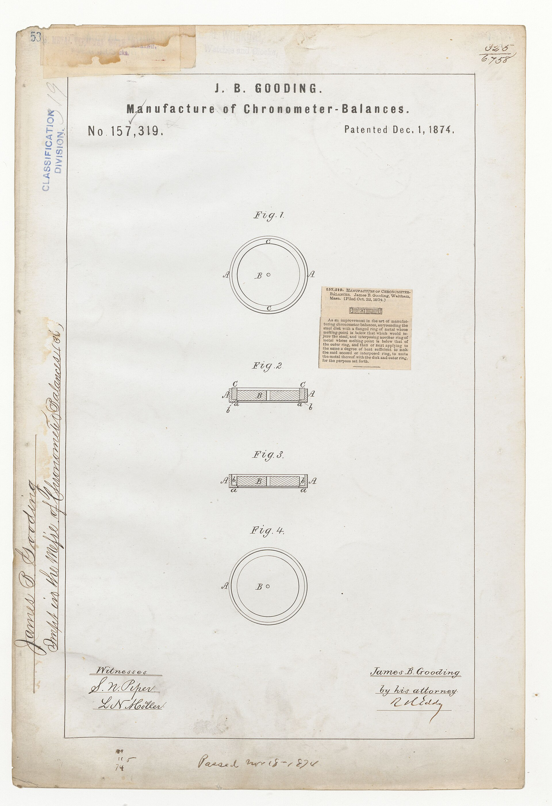
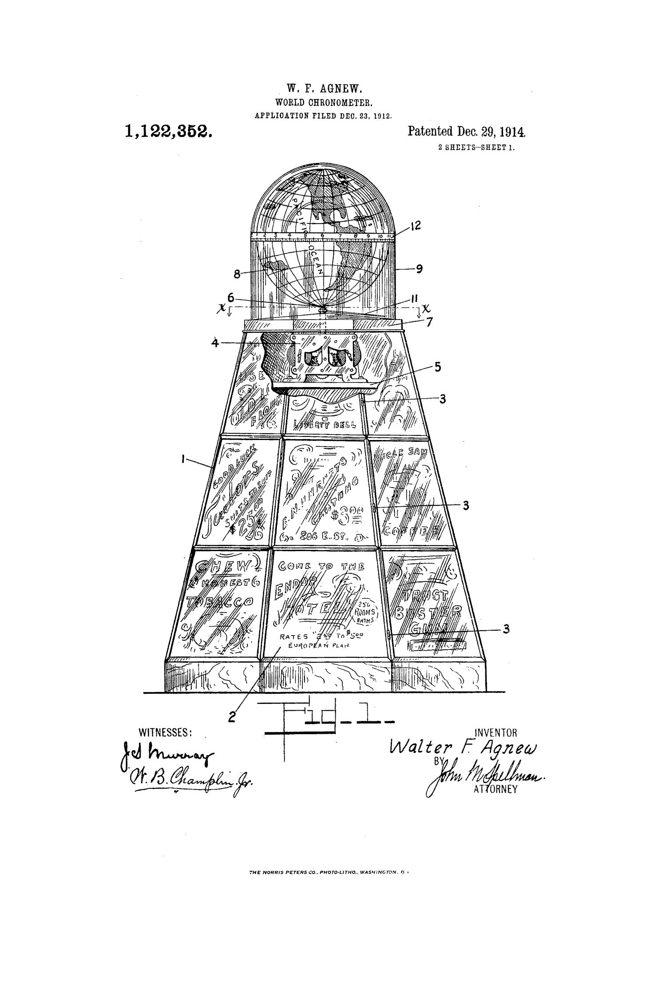
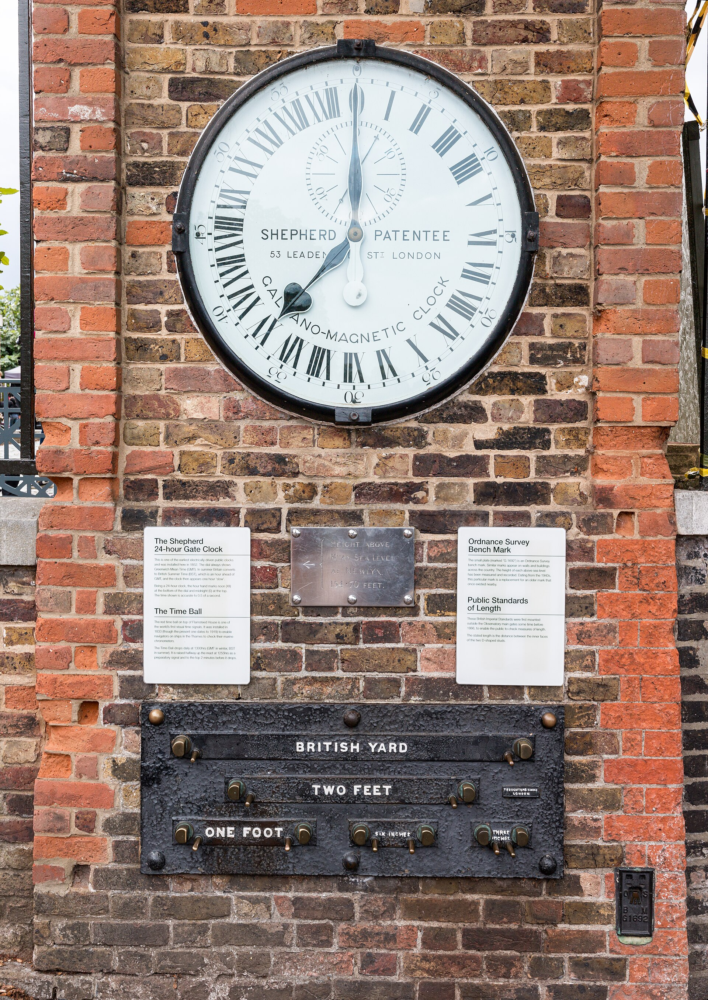

Interface States
How atw presents tracked time in the Omarchy bar and panel. Hovering any app row reveals an instant deletion option.

Live Status Preview
Real-time representation of how changing settings adjusts the status chip and daemon aggregation.
Configurable Parameters
Settings are stored in ~/.config/atw/config.toml and can be edited directly or through the Omarchy bar popup.
Bar Display Format
Right-clicking the bar icon cycles display formats between icon-only, hours, and full hours with minutes.
Cloud Sync Cadence
Background sync batches closed segments over HTTPS to Turso. Shorter intervals keep multi-machine setups closer in sync.
Category Allowlist
Only dev applications are monitored. Media players, file managers, and games are discarded on arrival.
Installation & Execution
Run these commands in an Omarchy terminal to install the systemd user service, compile the binaries, and mount the widget.
First, install from repository.
Installs binaries to ~/.local/bin and enables the systemd service unit.
omarchy plugin add https://github.com/dhirajaryaa/Dev-Activity-Watcheratwd release binary, registers dev-activity-watcher.atw in the bar, and initiates Wayland event capture.
Then, inspect tracking status.
Read today's union intervals directly from the local SQLite database.
atw statusVisual Studio Code: 2h 45m
Cursor: 1h 12m
Firefox: 48m
Today's union active time: 4h 18m
Finally, verify cloud connectivity.
Tests the Turso database URL and token credentials without pushing local segments.
atw sync --checkconnected — cloud has 1,280 stored segment(s), schema verified.
Turso Database Setup
How to create your self-owned Turso database, issue read-write and read-only tokens, and wire sync.
1. Create a Turso Database
You can create a free database via the Turso CLI or web dashboard:
# Install Turso CLI if not present
curl -sSfL https://get.tur.so/install.sh | bash
# Authenticate and provision a database
turso auth login
turso db create dev-activity2. Generate Database Tokens
Create two separate tokens: one read-write for the tracking daemon, and one read-only for web dashboards and portfolios.
# Show your database URL (libsql://dev-activity-[user].turso.io)
turso db show dev-activity --url
# Generate daemon read-write token (default: no expiration)
turso db tokens create dev-activity
# Generate dashboard read-only token for GitHub Pages
turso db tokens create dev-activity --read-only3. Configure the Daemon
Save the URL and write token into atw using either the bar panel or the CLI:
# Set the database URL
atw config set sync.url "https://dev-activity-username.turso.io"
# Set the write token (reads from stdin to keep secret out of process list)
echo "YOUR_WRITE_TOKEN" | atw config set sync.token -
# Restart daemon to apply
systemctl --user restart atwdToken Security Model
Write Token: Stored locally in ~/.config/atw/config.toml (owner-only permission mode 0600). Never publish this token.
Read-Only Token: Safe for public portfolio dashboards, read queries, and personal GitHub Pages. It can execute SELECT but cannot alter or delete rows.
Zero-Knowledge Content: atw never records window titles, file paths, keystrokes, or code snippets. Only timestamps, app names, and high-level categories leave your machine.

Database Tables & SQL Queries
The Turso schema is automatically created on the first sync cycle. Pre-aggregated tables allow instant queries without scanning raw segments.
Cloud Tables
| Table | Grain | Lifecycle |
|---|---|---|
segments |
One row per usage slice | Raw segments pruned after 90 days |
batches |
One row per upload batch | Replay & idempotency protection |
devices |
One row per connected machine | UUID, first seen, last sync |
daily_app |
One row per day × app | Aggregated, kept indefinitely |
daily_unique |
One row per calendar day | Union interval active seconds |
Aggregation Columns
| Column | Table | Meaning |
|---|---|---|
merged_seconds |
daily_app |
Union of app intervals across all devices |
combined_seconds |
daily_app |
Raw sum of app usage time |
unique_active_seconds |
daily_unique |
Global active union (≤ 86,400s per day) |
overlap_seconds |
daily_unique |
Time two devices ran simultaneously |
Sample SQL Queries
Use these queries in web dashboards or client-side fetchers with your read-only Turso token.
-- Top apps ranked by merged wall-clock hours (last 30 days)
SELECT app_name,
SUM(merged_seconds) / 3600.0 AS hours,
SUM(combined_seconds) / 3600.0 AS raw_usage_hours
FROM daily_app
WHERE activity_date >= date('now', '-30 days')
GROUP BY app_name
ORDER BY hours DESC;-- Daily active hours and multi-device overlap (last 30 days)
SELECT activity_date,
unique_active_seconds / 3600.0 AS active_hours,
overlap_seconds / 3600.0 AS overlap_hours
FROM daily_unique
ORDER BY activity_date DESC
LIMIT 30;-- Activity intensity for GitHub-style activity heatmaps (90 days)
SELECT activity_date,
unique_active_seconds
FROM daily_unique
WHERE activity_date >= date('now', '-90 days')
ORDER BY activity_date ASC;-- Segment count and recorded hours per machine (raw table)
SELECT device_id,
COUNT(*) AS segments,
SUM(duration_seconds)/3600.0 AS hours
FROM segments
WHERE activity_date >= date('now', '-30 days')
GROUP BY device_id;Frequently Answered
Architectural details and common operational considerations.
Tracking is local by default in SQLite (~/.local/share/atw/activity.db). Cloud sync is strictly optional and targets your own self-hosted or managed Turso database.
Horology & Precision Records
Archival precision instruments from public collections representing exact temporal measurement.
